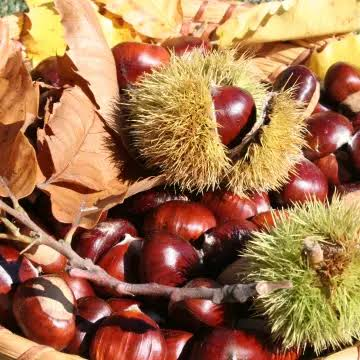

Châtaignes
CévenolesL’arbre à pain des Cévennes


⟹ Savoir-faire & Traditions ⟸
L’arbre à pain. Dans les vallées schisteuses et granitiques des Cévennes, les sols acides et pauvres se prêtent mal à la culture du blé. Le châtaignier, lui, y prospère. Dès le Moyen Âge, il devient la base de l’alimentation paysanne, au point d’être surnommé « l’arbre à pain ». Pendant des siècles, la châtaigne nourrit les familles une grande partie de l’année, fraîche en automne, séchée le reste du temps.
Un arbre dont tout se sert. Rien ne se perd dans la châtaigneraie. Les fruits nourrissent les hommes, et les moins beaux engraissent les cochons. Les feuilles servent de litière et de fourrage pour les chèvres et les brebis. Le bois, imputrescible, fournit charpentes, piquets de vigne, douelles de tonneaux, meubles et même les ruches-troncs des apiculteurs. Les bogues, enfin, alimentent le feu des séchoirs. Le châtaignier structure toute l’économie domestique cévenole.
Une civilisation du châtaignier. Du XVIe au XIXe siècle, les Cévenols aménagent patiemment les pentes les plus raides en terrasses soutenues par des murs de pierre sèche, les faïsses ou bancels, parcourues de rigoles d’irrigation et d’évacuation des eaux. Ils y plantent et greffent des arbres sélectionnés avec soin : on recense plus de 130 variétés locales, chacune adaptée à un sol, une exposition, une altitude ou un usage – consommation fraîche, séchage, farine ou alimentation animale. Parmi les plus connues figurent la Pellegrine, la Figarette, la Bouche rouge, la Sardonne, l’Aguyane ou la Dauphine.

Le temps de la récolte. En octobre et en novembre, toute la famille participe au ramassage. Les fruits tombent naturellement de l’arbre dans leurs bogues épineuses et sont récoltés au sol, à la main ou au râteau. C’est aussi le temps des veillées et des castagnades, où l’on grille les châtaignes fraîches dans une poêle trouée : c’est l’affachade, encore pratiquée aujourd’hui.
La clède, cœur de la conservation. Pour conserver la récolte toute l’année, les châtaignes sont séchées dans la clède (ou sécadou), un petit bâtiment de pierre à deux niveaux. À l’étage, les fruits reposent sur une claie de lattes de bois ; au rez-de-chaussée, un feu doux et fumant, entretenu jour et nuit avec des bogues et du bois, brûle en continu pendant plusieurs semaines. Une fois sèches, les châtaignes sont battues dans des sacs pour les débarrasser de leur écorce et de leur peau : on obtient les châtaignons, qui se conservent plus d’un an.
Une cuisine de la châtaigne. Le châtaignon se réhydrate et se cuit longuement pour préparer le bajanat, soupe traditionnelle cévenole à base de châtaignes sèches, parfois cuite au lait ou au bouillon. Moulu, il donne une farine douce utilisée pour les bouillies, les galettes et les pains. Fraîches, les châtaignes sont bouillies avec des feuilles de figuier ou d’anis sauvage, ou grillées au coin du feu.
L’arbre à pain et l’arbre d’or. Au XVIIIe et au XIXe siècle, les Cévennes vivent aussi de la soie. Le mûrier, surnommé « l’arbre d’or », nourrit les vers à soie, tandis que le châtaignier nourrit les hommes : ces deux arbres façonnent ensemble les paysages et l’économie. Vers le milieu du XIXe siècle, la population cévenole atteint son maximum et la châtaigneraie son extension la plus grande.
Crises et déclin. À partir de la seconde moitié du XIXe siècle, les difficultés s’accumulent. La maladie de l’encre, causée par un micro-organisme du sol, fait périr de nombreux arbres. À la fin du XIXe et au début du XXe siècle, des milliers de châtaigniers sont abattus pour alimenter les usines d’extraction de tanin, utilisé pour le cuir. L’exode rural et les deux guerres mondiales vident les vallées, puis le chancre de l’écorce, arrivé au milieu du XXe siècle, affaiblit encore les vergers. Plus récemment, un insecte venu d’Asie, le cynips du châtaignier, a durement touché les récoltes avant d’être contenu par la lutte biologique. Beaucoup de châtaigneraies retournent à la friche.
Le renouveau. Depuis la fin du XXe siècle, une nouvelle génération de castanéiculteurs restaure les vergers, reconstruit les murets et relance la transformation artisanale : châtaignes fraîches, sèches, au naturel, farine, crème et confitures. La création du Parc national des Cévennes en 1970, puis l’inscription en 2011 des Causses et des Cévennes au patrimoine mondial de l’UNESCO, au titre des paysages culturels de l’agropastoralisme méditerranéen, soulignent la valeur de ce patrimoine façonné par l’homme.
« Les Cévennes ont fait la châtaigne et la châtaigne a fait les Cévennes. »
— Devise des producteurs de Châtaigne des CévennesUne appellation d’origine. En 2001, castanéiculteurs et transformateurs se regroupent pour faire reconnaître leur production. Après près de vingt ans de démarches, la « Châtaigne des Cévennes » obtient l’AOC le 21 septembre 2020, puis l’AOP européenne le 16 janvier 2023. L’aire couvre environ 200 communes du Gard, de la Lozère et de l’Hérault, ainsi que quelques communes limitrophes de l’Aveyron et du Tarn. Le cahier des charges retient une trentaine de variétés locales, impose la récolte après chute naturelle du fruit, n’autorise que les engrais organiques et interdit le débroussaillage chimique comme les traitements insecticides après récolte. Il protège trois formes : la châtaigne fraîche, la châtaigne sèche et la farine, ainsi que le savoir-faire du séchage en clède.